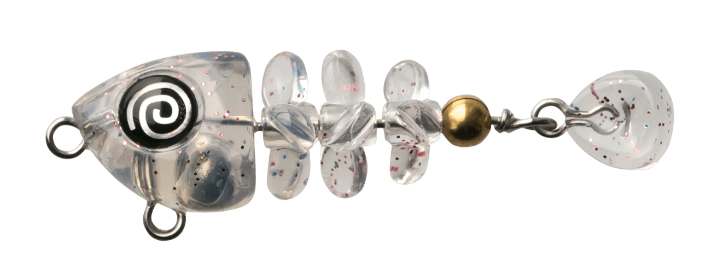
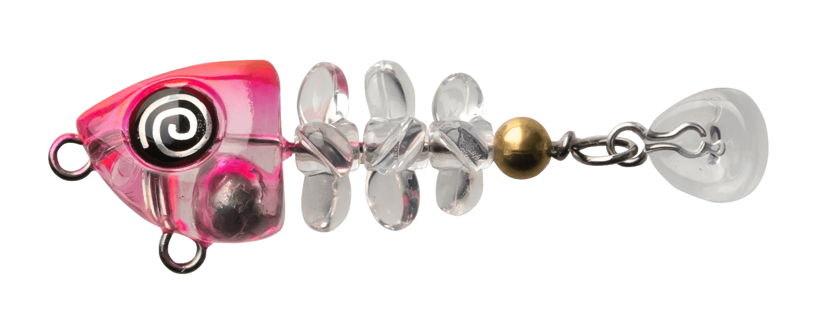
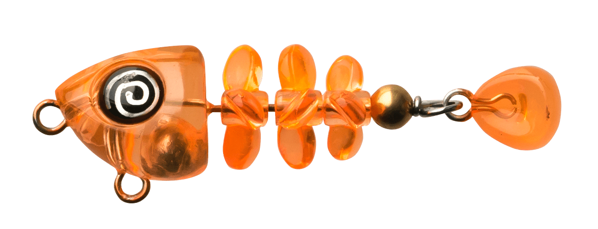
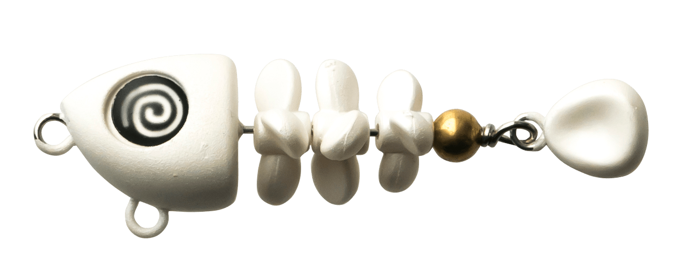

魚骨
（GYOKOTSU）
魚骨（GYOKOTSU）はBREADEN（ブリーデン）の骨型プラグです。
世にも奇妙な小魚の骸骨型プラグです。スローリトリーブでは骨ペラがスクリューと捻転でクネクネ〜クルクルと動き、微妙な浮遊感と波動で誘います。フォールではフラフラ〜クルクルと落ちる「幽体離脱フォール」「無気力フォール」で、ロックフィッシュをはじめとしたフィッシュイーターを虜にします。

画像出典:BREADEN公式HP
スペック
- メーカー
- BREADEN（ブリーデン）
- タイプ
- 骨型プラグ
- 全長
- 44mm
- ラインナップ
- 44shallow（2.0g）／44deep（2.5g）
- 適合フック
- BREADEN替フック
- カラー
- 全6色
- ターゲット
- ロックフィッシュ・メバルなどのフィッシュイーター
- 価格
- 1,100円（税別）
▼今すぐチェック

魚骨の特徴
ほかに無い動きで、スレた魚にも口を使わせる
-
骨ペラが回るクネクネ〜クルクルアクション
スローリトリーブでは、骨ペラがスクリューと捻転で動き、微妙な浮遊感と波動を出す。
-
幽体離脱フォール
フォールでは、フラフラ〜クルクルと力の抜けた「無気力フォール」で落ちていき、ロックフィッシュなどに口を使わせる。
-
ほかに無い動き
公式いわく、なぜ釣れるのかは「だってこんな動きのプラグ他には無いもーん！」。見慣れたルアーに反応しない魚へのアプローチになる。
魚骨の使い方
基本はスローリトリーブです。ゆっくり巻いて骨ペラがクネクネ回る動きを出し、ときどき止めてフォールさせると、フラフラと落ちる動きで食わせられます。
表層〜中層を探るならシャロー、底付近まで沈めてフォールを多めに使うならディープ、と使い分けましょう。
魚骨の得意な状況
堤防の際や岩礁帯でロックフィッシュやメバルを狙う時、ほかのルアーに反応しないスレた状況が得意です。
小さく軽いので、ライトゲームのタックルで手軽に使えます。
ワンポイント
コミカルな見た目ですが、動きはゆっくりがキモ。速く巻くより、「スロー＆フォール」で動きを見せる時間を長くとるのがコツです。
タイプの使い分け
| タイプ | 重さ | 使い分け |
|---|---|---|
| 魚骨44shallow（シャロー） | 2.0g | 表層〜中層をゆっくり巻きたい時 |
| 魚骨44deep（ディープ） | 2.5g | 底付近まで沈めて、フォールを多めに使いたい時 |
※重さは公式ページより（使い分けは一般的な目安）。どちらも全長44mm・1,100円（税別）です。
オススメカラー
魚骨は全6色。そのうち4色を紹介します。

01 オーロラクリア透け感のあるオーロラ系。澄んだ水で自然に見せたい時に。

02 クリアピンクヘッドヘッドにピンクを入れたアピール系。

04 クリアオレンジオレンジのアピールカラー。濁りやローライトに。

05 ボーングロー骨が光るグローカラー。夜のゲームに。
画像出典:BREADEN公式HP
魚骨に似ているルアー
-
 エビのさんぽ
BREADEN
詳細はこちら＞
エビのさんぽ
BREADEN
詳細はこちら＞
同じBREADENのエビ型プラグ。エビを食べている魚に合わせたい時に。
-
 ハタ喰い・蟲
RUDIE'S
詳細はこちら＞
ハタ喰い・蟲
RUDIE'S
詳細はこちら＞
ブレード付きの根魚用ワーム。ロックフィッシュをワームで狙う時に。
-
 クリルン
ブルーブルー
詳細はこちら＞
クリルン
ブルーブルー
詳細はこちら＞
ジグヘッドで使うワーム。ライトゲームで食わせたい時に。